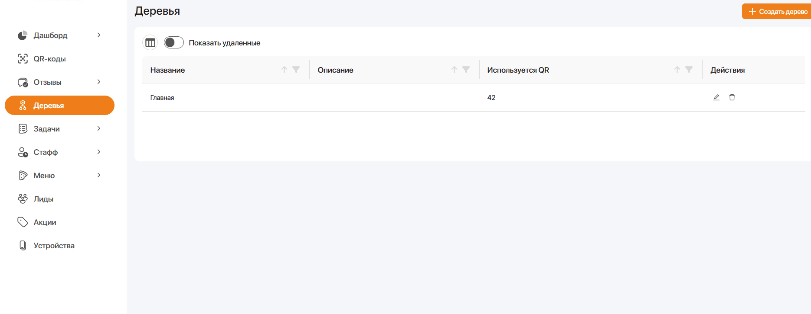
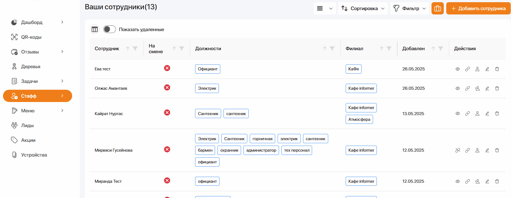

- Добавлена функция генерации QR-кода "QR-код": возможность создавать уникальные коды для различных целей, включая ссылки на веб-сайты, контактную информацию, Wi-Fi подключения и другие данные, с возможностью настройки цвета и размера. 
- Реализована возможность сканирования QR-кодов: пользователи могут сканировать коды с помощью камеры устройства и получать доступ к закодированной информации или действиям.
- Добавлена возможность сохранения QR-кода в галерею устройства или отправки его через различные приложения и социальные сети. 
Теперь можно делиться/скачивать:
Основные улучшения:
• Добавлена поддержка темной темы для более комфортного использования приложения в условиях слабого освещения.
• Улучшена стабильност работы сканера - теперь он быстрее распознает коды даже при неидеальных условиях освещения.